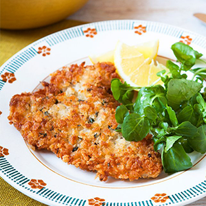

Schnitzel

Discription
Quick and easy to put together, this light crispy pork dish is a mega taste treat, with the lemon and herbs adding plenty of zing. It’s our take on the classic Wiener schnitzel and we think it’s worthy of a place on any Viennese table. Makes a couple of pork steaks go a long way, too.
- 2 x 180g pork loin steaks
- 1 large egg
- 2 tbsp plain flour
- 75g coarse dried white breadcrumbs (Japanese panko breadcrumbs are ideal)
- finely grated zest of ½ lemon
- 15g Parmesan cheese, finely grated
- 1 heaped tbsp chopped fresh thyme leaves
- 300ml vegetable oil
- 2 handfuls of watercress, to garnish
- 1–2 tsp extra virgin olive oil, to drizzle
- flaked sea salt
- freshly ground black pepper
- Place a pork loin steak between 2 sheets of clingfilm and bash it with rolling pin or meat mallet until it is about 1cm thick all over. Remove the clingfilm and cut the flattened steak in half lengthways, then prepare the other steak in the same way. Season the steaks on both sides with salt and black pepper.
- Beat the egg in a bowl. Sprinkle the flour on to a plate. Mix the breadcrumbs, lemon zest, Parmesan, thyme and a good pinch of salt in a shallow bowl. Take a piece of pork and dredge it in flour, then dip it into the beaten egg, and lastly in the breadcrumb mixture until it is completely coated. Repeat with the other pieces of pork.
- Heat the oil in a large frying pan until a breadcrumb sizzles and turns golden-brown when dropped into it. Take care: hot oil can be dangerous so don’t leave the pan unattended. Add 2 of the schnitzels to the pan and fry for 2–3 minutes on each side, or until the pork is cooked through and the coating is crisp and golden brown.
- Remove them from the pan and set aside on a warmed plate lined with kitchen paper. Keep them warm while you cook the other 2 schnitzels.
- Serve garnished with watercress and drizzled with a little olive oil. Some potato salad on the side is just right with these.